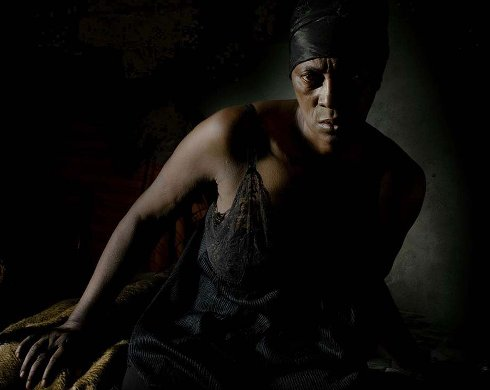

Vitalina VareLa

Pedro costa
donnerstag 10 okt | 19.00 | filmmuseum |
eröffnung
Eine nachtschwarze Geistergeschichte, streng, bildgewaltig, expressionistisch. Vitalina hat 25 Jahre auf den Kapverden auf ihr Flugticket nach Lissabon gewartet und schafft es jetzt noch nicht einmal rechtzeitig zur Beerdigung ihres in Portugal verstorbenen Ehemanns. Ihr vergebliches Leben kommt in der Erinnerung auf und der nicht in Erfüllung gegangene gemeinsame Lebenstraum. Es ist die wahre Lebensgeschichte von Vitalina, die bereits in Costas HORSE MONEY zu sehen war. Gedreht wurde in den Slums von Lissabon.
Pedro Costa geb. 1959 in Lissabon. Studium an der Filmhochschule von Lissabon bei António Reis. Er gilt als eigenwilligster Filmemacher seiner Generation, der mit Licht und Dunkelheit filmische, intim-expressionistische Gemälde zwischen Spiel- und Dokumentarfilm schafft. Mit Casa de lava beginnt seine Auseinandersetzung mit den Capverdischen Einwanderern im Armenviertel Fontainhas von Lissabon, die sich auch nach der Beendigung des „Vanda”-Zyklus' (und dem Abriss der Slumsiedlung) in seinem Werk fortsetzt. |
| Filme O sangue 1990 | Casa de lava 1994 | Ossos 1997 | No quarto da Vanda 2000 | Où gît votre sourire enfoui? 2001 (2. UX) | 6 Bagatelas 2001 (2. UX) | Juventude em marcha 2006 (2. UX) | Ne change rien 2009 (5. UX) | Horse Money 2014 | Vitalina Varela 2019 |